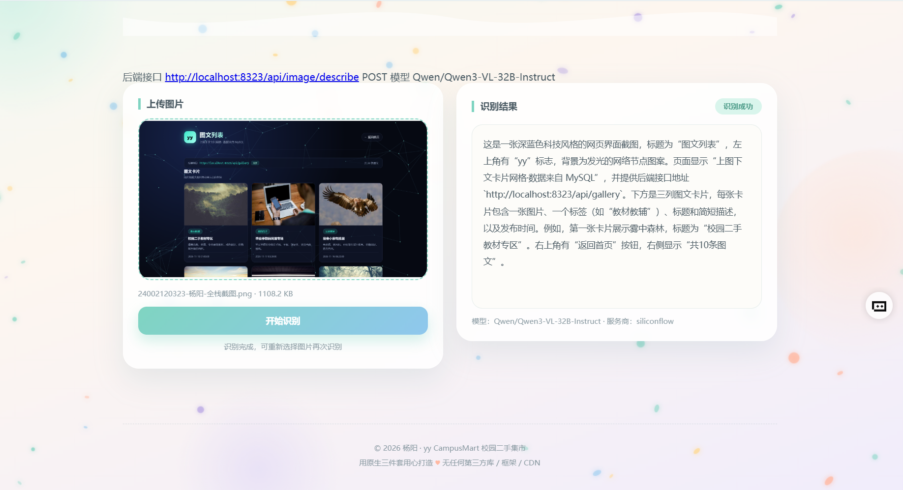
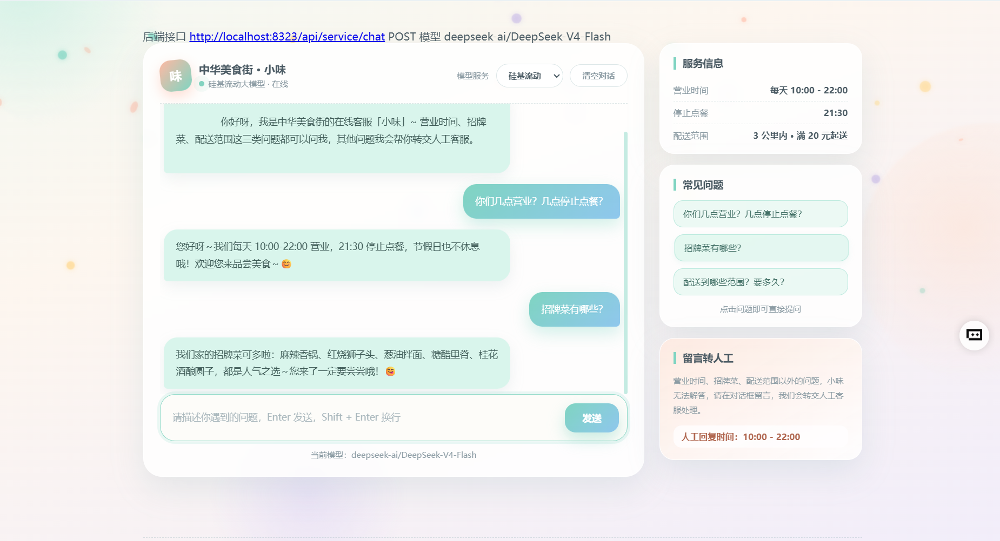
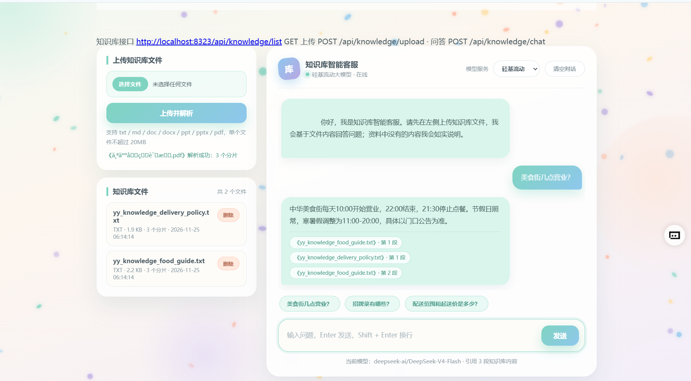
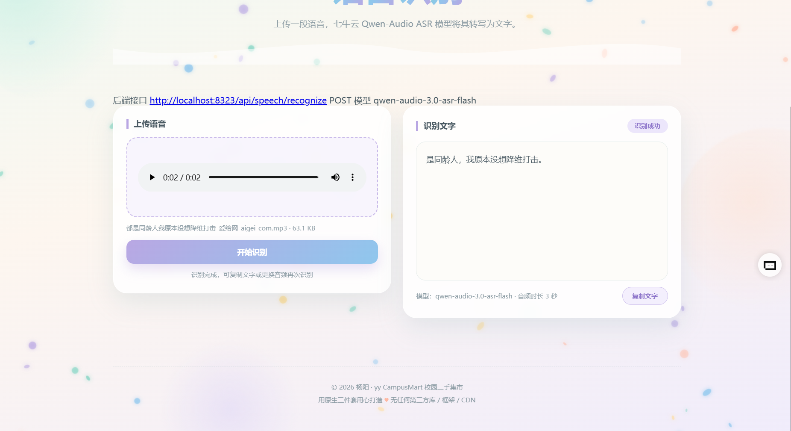

四个 AI 能力页面的实际运行截图，均来自本地 8323 端口的真实测试。
点击任意截图可在新标签页查看原图

上传一张图文列表截图，Qwen3-VL-32B-Instruct 返回对页面标题、布局与卡片内容的完整描述。

中华美食街客服「小味」按营业时间、招牌菜、配送范围三类问题作答，其余问题引导留言转人工。

上传《yy_knowledge_delivery_policy.txt》《yy_knowledge_food_guide.txt》后，回答「美食街几点营业？」并标注引用片段。

上传 3 秒的 aigel.com.mp3，七牛云 Qwen-Audio ASR 模型准确转写为「是同龄人，我原本没想降维打击。」